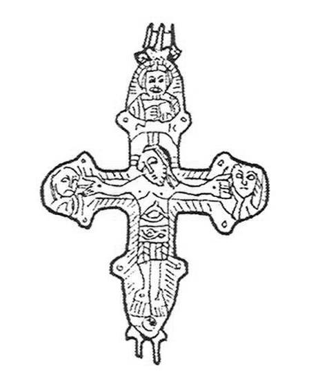
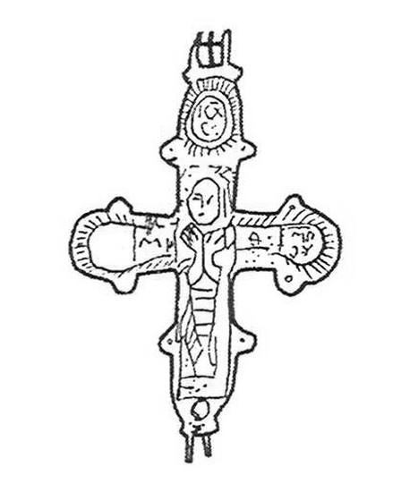

Catalog › CE-0535 · IAH2007-2-3
Encolpion bivalv, Mușkativka (Рис. 2, 3)
sec. XII–XIII (1101–1300) · Mușkativka, regiunea Ternopil, raionul Borșciv, Ucraina
double-sided reliquary cross (enkolpion); c. XII–XIII (1101–1300); found at Mușkativka, regiunea Ternopil, raionul Borșciv, Ucraina.




Identificare
- Categorie
- Encolpion bivalv (relicvar)
- Tehnică
- Turnare în relief; Gravare (incizie)
- Dimensiuni
- Î 63 × L 43 mm
Iconografie
- Avers
- Sf. Nicolae
- Descriere avers
- Răstignirea, cu corp proporționat și capul înclinat spre dreapta; chipul bine redat (ochi, arcade, nas lung și subțire, barbă scurtă, păr lung); brațele ușor îndoite pe fundalul lemnului crucii, degetele subliniate cu dalta; nimb crucifer. Brâu până la genunchi, cu ornament complicat în partea de sus și model «brad» în partea de jos; mușchii pieptului și ai abdomenului sunt subliniați; urme de cuie la încheieturi și la picioare. În medalioanele laterale, figuri aflate în fața crucii; în medalionul de sus un sfânt cu păr lung, mustăți și barbă, cu Evanghelia închisă în stânga și binecuvântând cu dreapta; dedesubt se păstrează literele «N» și «К». Autoarea socotește probabil că figura de sus este Sf. Nicolae.
- Revers
- Maica Domnului Orantă
- Descriere revers
- Valva inferioară, mult mai slab păstrată, cu suprafața foarte ștearsă și lustruită de purtare îndelungată. În centru Maica Domnului în picioare, cu palmele deschise în fața pieptului, în hiton și maforion, cu nimb; chipul este șters. Alături se disting literele «МР» și «О». În trei medalioane sunt inscripții: sus «ІС ХС» cu titlu, în stânga «МР» și «ОУ» cu titlu; în medalionul din dreapta inscripția este aproape complet ștearsă.
- Inscripții
- N, К (sub figura din medalionul de sus); МР, О; ІС ХС; МР, ОУ
Datare și atribuire
- Datare
- sec. XII–XIII (1101–1300)
Descoperire
- Localitate
- Mușkativka
- Regiune
- regiunea Ternopil, raionul Borșciv
- Țară
- Ucraina
- Context
- Necunoscut
- Coordonate
- 48.8110° N, 26.0992° E
- Precizia locului
- Doar localitatea
Păstrare și referințe
- Bibliografie
- М. Ягодинська, Нові культові речі з давньоруських пам’яток Західного Поділля, în „Матеріали і дослідження з археології Прикарпаття і Волині”, 11, 2007, p. 346–357 [Ягодинська 2007], p. 349, Рис. 2, 3, reprodusă la Рис. 2, 3 (p. 350).
- Figura
- Рис. 2, 3
- Planșe
- Ягодинська 2007, p. 350
- Analogii
- Autoarea notează asemănarea de tehnică cu cruci sirio-palestiniene cu Maica Domnului Orantă (Куницький 1990, p. 106–116); analogii exacte nu au fost găsite.
- Observații
- Executat în relief scăzut, cu prelucrare ulterioară cu dalta. Stare bună la valva din față. Dimensiuni 6,3×4,3 cm. Colecția piesei nu este precizată. Material: aliaj de cupru, fără precizare suplimentară. Coordonate: ale localității (aproximative), nu date în sursă.
Citare: Corpus Encolpiorum, CE-0535, Encolpion bivalv, Mușkativka (Рис. 2, 3), --root/piese/IAH2007-2-3/ (accesat 2026-10-17).